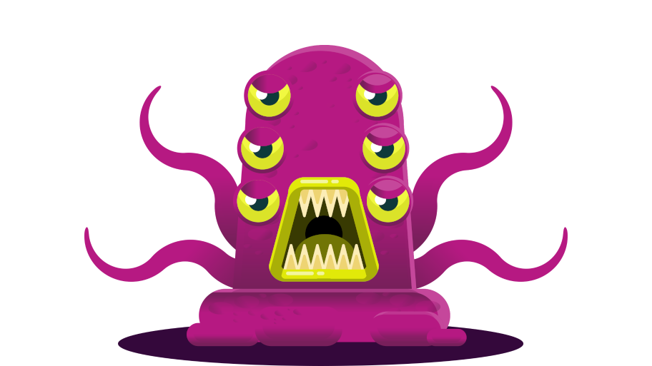

Thank you for considering taking part in this research.
Title of Study
Simplified planning in a conflicting goals setting
SAGE-HDR Response ID
1046015-1045997-110726394
Date
16-05-2023
The goal of this study is to understand how people make decisions. In this study, you will play a game in which you are a space miner collecting alien crystals on an alien planet. You have up to to complete the experiment. The study will be conducted in accordance with internationally recognized principles. You will receive financial compensation for participating in this study; the amount depends on the decisions you make and will vary between £ and £.
Please complete this form after you have read the explanation above. If you have any questions about this explanation, please ask the researcher on Prolific before you make your decision. You can download a copy of this Consent Form and the Information Sheet to keep and refer to at any time.
By checking each box, you are consenting to this part of the study. Any unchecked boxes will mean that you do not agree to that part of the study and this may mean you are ineligible for the study.
There was an error when trying to save your results. Please download them below and send them to the researchers on Prolific. Your participation will be approved and your payment will be made.
Please also enter this completion code on Prolific:
IMPORTANT: To quit the experiment, press ESC. If you quit the experiment before it’s over, you won’t get paid, so be careful.
Thank you for participating in this experiment about how people make decisions. You’ll earn money and help with our research. You’ll get £ for your participation and up to £ as a bonus depending on your performance. If you pay attention and do your best, you’ll get a much higher bonus.
You must finish this experiment within to receive your payment. This is plenty of time and there’s no need to rush, but please find a quiet place where you won’t be interrupted. Turning off your phone helps too.
Use the right arrow key to go to the next screen and the left arrow key to go back.
It is the year 2452, and you work as a space miner for a company called Cosmic Crystal Corp (C3). Every day you fly to planet Zyxlon in search of alien crystals.
These crystals have strong healing power. Your company sells them in the Intergalactic Market and shares the profits with you. Crystals come in different sizes, and the bigger ones are worth more money.
Each working day, you take a spaceship to planet Zyxlon. The ticket for a round trip costs 100 points, which will be deducted from your overall score.
On planet Zyxlon, you will find five crystals you can collect or discard. Each crystal you find is unique and worth a different number of points. Some examples are shown below.
Throughout the day, you’ll keep track of the points you’ve earned from collecting crystals. Whenever you find a new crystal to collect or discard, the DISCARD box shows the total number of points for the day if you choose to discard the crystal you’ve found. In the example screen below, it’s 45 points.
The COLLECT box shows the updated total for the day if you choose to collect the crystal you’ve found. For example, the crystal below is worth 20 points, so if you choose to collect it, your total will increase from 45 to 65 points.
The score box in the top left corner shows all the points you’ve earned in the game, adding up all working days. Each crystal you collect adds points to your overall score.
This is your boss at C3. At the end of each working day, he gives you a bonus, which will be added to your overall score.

He often rewards you with a nice bonus for your hard work. But if you end up earning too many points in a single day, he might suspect you are involved in illegal and environmentally harmful mining practices, so he might give you a small or even negative bonus.
Your boss can also be quite unpredictable. He might increase or decrease your bonus for the most absurd reasons. For example, if he likes your hair today or his favourite football team won a match, he might increase your bonus. But if he had a bad night’s sleep or his tea was served cold, he might decrease your bonus.
To get the highest bonus, you must avoid collecting too many points in a day so your boss doesn’t suspect you of illegal mining. Unfortunately, your boss hasn’t told you what he considers too many points, so you’ll need to figure it out.
You will find out your bonus after you choose to collect or discard the fifth and last crystal of the day.
Before you choose to collect or discard the fifth crystal of the day, you will be asked to predict your bonus. First, you’ll see the point value of the fifth crystal and what your total for the day will be if you choose to collect or discard it. When you see this screen, decide if you’ll collect this crystal or not.
Then, you’ll move to the bonus prediction screen. Information about the fifth crystal will be at the top right of the screen, helping you predict the bonus.
You can earn up to 50 points for predicting your bonus, and these points will be added to your overall score. The more accurate your prediction, the more points you will earn.
To achieve a high score, pay close attention and figure out the maximum points you can collect in a day while still receiving a generous bonus from your boss.
Now you can go back and reread these instructions or you can press SPACE to start a game tutorial. The points you earn in the tutorial will not affect your payment, but the tutorial will help you maximize your score during the game, so do your best to learn during the tutorial. You’ll receive helpful messages along the way to guide you.
You have finished the tutorial. Well done! Now you know how to travel to planet Zyxlon, collect crystals, and predict how many points your boss will give you as a bonus.
Next, you’ll play the game for rounds. Each round corresponds to a working day in the game storyline. At the beginning of each round, you’ll buy a spaceship ticket for 100 points and fly to planet Zyxlon. This will happen automatically. You don’t have to press any keys.
Then you will choose whether to collect or discard five crystals, just like you practised earlier. Before you choose to collect or discard the fifth crystal, you’ll be asked to predict your bonus.
You can earn up to 50 points for your bonus prediction, so put your best guess forward.
Afterwards, you’ll find out how many bonus points your boss gave you and how many points you earned from your bonus prediction.
Remember that if you get too greedy and earn too many points from collecting crystals in a single day, your boss might suspect you are involved in illegal and environmentally harmful mining practices, so he might give you a small or even negative bonus.
Your boss knows crystal mining is hard and sometimes you can only find small crystals to collect. He doesn’t care if you earned too few points in a day. He only cares if you earned too many.
So, to get a good bonus from your boss and achieve a high score in this game, consider leaving some crystals behind.
However, remember that your boss can be quite unpredictable and might increase or decrease your bonus for ridiculous reasons.
At the end of the game, your overall score will be converted into pounds and added to your payment.
Now you can go back and reread these instructions or you can press SPACE to start the game. Pay attention and play well to maximize your earnings.
SCORE
You are on your daily commute to planet Zyxlon. You don’t have to do anything except enjoy the view. Bon voyage!
Crystal
points
DISCARD
COLLECT
SCORE
Press the left arrow key to discard this crystal and the right arrow key to collect it. If you collect it, the points will be added to your total score.
Press ENTER to submit prediction …
Here you can predict how much your boss will give you as a bonus. It’s okay to guess a random number if you have no idea.
points
DISCARD
COLLECT
SCORE
BONUS
DAILY POINTS
BONUS PREDICTION
SCORE
FINISHED! Your total payment will be £
Thank you for participating in this experiment! Please use the space below to describe your strategy during the game and to tell us what you think about our experiment.